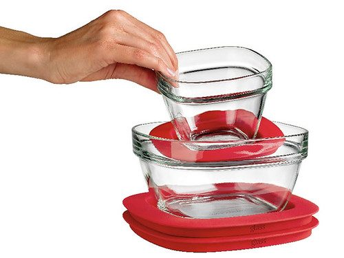
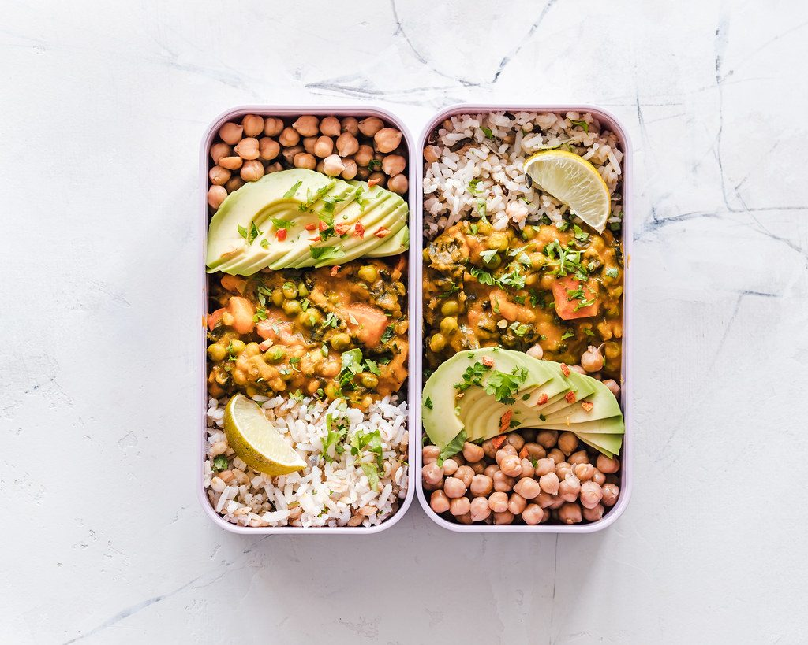
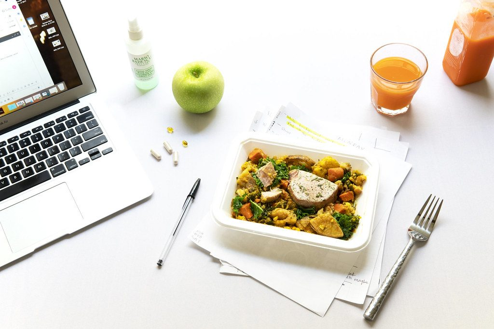
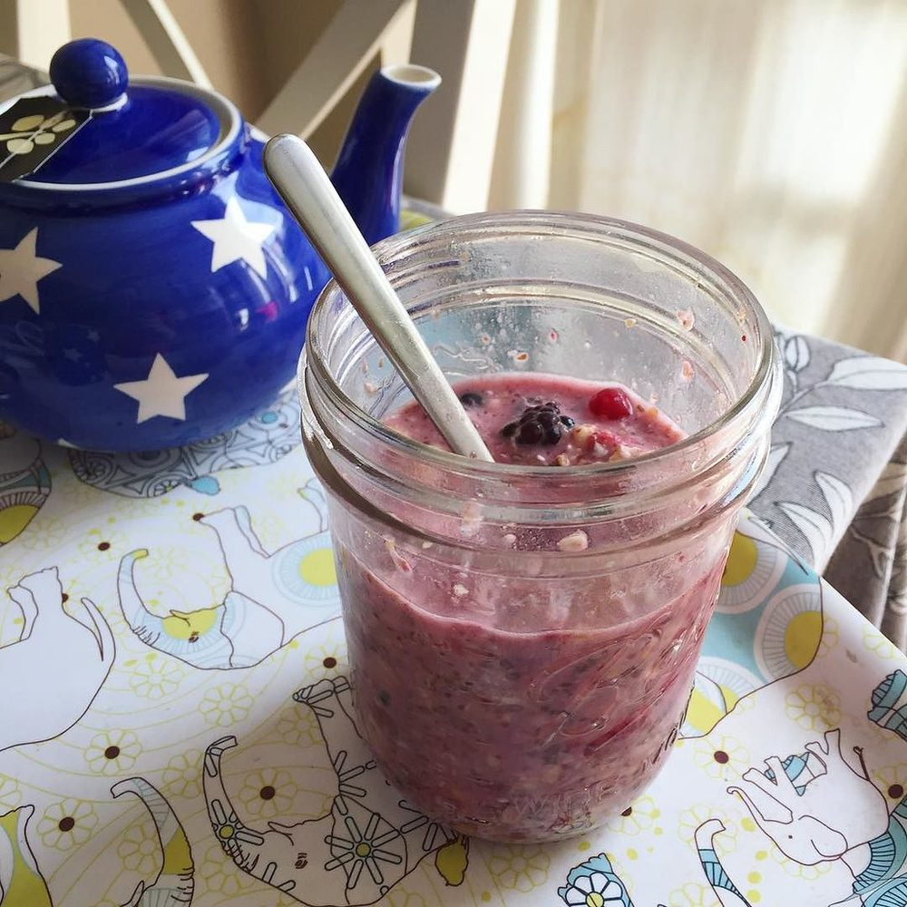

The Best Meal Prep Containers
The right container is the difference between lunch you're happy to eat on Thursday and lunch you throw away. These are our picks — tested through a full week of real meal prep.

Glass containers with separate sauce cups — the setup we use for the 7-day plan.
How We Picked
Every container here was judged on the same five things: seal (no leaks in a bag), durability (survives the microwave, dishwasher, and freezer), stacking (doesn't eat your whole cabinet), size range (fits a real adult meal, not a side salad), and value (cost per container, not cost per set). Anything that stained after one chili, warped in the microwave, or leaked dressing into a tote bag was cut.

Glass Meal Prep Container Set
Our top pick, full stop. Glass doesn't stain, doesn't hold odors, and reheats evenly. These go from fridge to microwave to table, and a good set lasts for years. Look for borosilicate glass with snap-lock lids.
- Won't stain from chili, curry, or tomato sauce
- Microwave-, oven-, and dishwasher-safe
- Heavier than plastic — best for home and office

Bento-Style Compartment Containers
Built-in dividers keep your rice away from your salad and your sauce away from everything. Ideal for the teriyaki bowls and burrito bowls in our chicken recipes — no extra containers needed.
- 2–3 compartments keep foods separate
- Great for lunches with a hot and a cold side
- Check that the dividers are leakproof, not just dividers

Lightweight Plastic Container Set
When glass is too heavy for your bag, BPA-free plastic is the answer. A 10-pack costs less than one glass set, so it's also the cheapest way to start. Buy microwave-safe ones and replace them yearly.
- Light enough for a gym bag or backpack
- Cheapest per container by far
- Can stain and warp over time — treat as consumable

Wide-Mouth Mason Jars (32 oz)
The perfect home for overnight oats, chia pudding, parfaits, and soups. Wide mouths make them easy to fill, eat from, and clean. They're also the cheapest "container" on this page — a 12-pack is a few dollars.
- Ideal for oats, parfaits, soups, and salads
- Freezer-safe if you leave an inch of headroom
- Glass, so no stains or odors
Small Sauce & Dressing Cups (2–4 oz)
The secret weapon of good meal prep. Sauces and dressings packed separately are why day-four food still tastes fresh. A pack of 2 oz cups costs almost nothing and upgrades every meal on this site.
- Keeps sauces and dressings off food until serving
- Also great for nuts, seeds, and snacks
- Buy leakproof ones with screw-on or snap lids
Quick Comparison
| Container | Best for | Microwave | Weight | Price range |
|---|---|---|---|---|
| Glass set | Everyday lunches & dinners | Yes | Heavy | $$ |
| Bento compartments | Mixed hot/cold lunches | Usually | Medium | $$ |
| Plastic set | Carrying, gym, budget start | If labeled safe | Light | $ |
| Mason jars 32 oz | Oats, parfaits, soups | Yes (no lid) | Medium | $ |
| Sauce cups 2–4 oz | Sauces, dressings, snacks | Usually | Light | $ |
Glass vs. Plastic: The Honest Answer
Glass wins at home. It doesn't stain, doesn't absorb smells, reheats evenly, and a good set will last a decade. The downsides are weight and breakage — drop a glass container on tile and it's done.
Plastic wins on the move. It's light, cheap, and won't shatter in your bag. The downsides are staining (tomato sauce is the usual culprit), warping in the dishwasher, and a shorter lifespan — plan to replace plastic sets about once a year.
Our setup: glass at home, plastic for the bag, mason jars for breakfast, sauce cups for everything. That covers every recipe on this site.
What to Avoid
- Containers without a real seal. Press-on lids that pop off in your bag will ruin your week. Snap-lock lids or screw tops only.
- Single-size sets. You need at least two sizes — large for meals, small for sauces and snacks. A set of 10 identical containers is a false economy.
- Unlabeled plastic in the microwave. If it doesn't say microwave-safe, don't microwave it. Transfer to a plate instead.
- Round containers for the fridge. Square and rectangular containers use fridge space far better than round ones.
Frequently Asked Questions
Are glass or plastic meal prep containers better?
Glass is better for most meal prep: it doesn't stain or hold odors, it reheats evenly, and it lasts for years. Plastic wins on weight and price. Our recommendation: glass for home, plastic for carrying.
What size meal prep containers should I buy?
For most adults, 3–4 cup (24–32 oz) containers fit a full lunch or dinner. Smaller 1–2 cup containers are right for snacks, sauces, and sides. A good starter set is 10 large containers plus 5–10 small ones.
Can you microwave meal prep containers?
Glass containers are microwave-safe (remove the lid or crack it open first). Only microwave plastic containers labeled microwave-safe, and never microwave plastic with the lid sealed.
How many meal prep containers do I need for a week?
For one person prepping lunches and dinners for 5 days, 10 large containers is the sweet spot. Add 5 small containers for sauces and snacks. If you prep breakfasts too, add 5 mason jars or small containers.
Now put them to work: the 7-day meal prep plan uses exactly this setup, and the essential kitchen gear guide covers the tools that fill them.